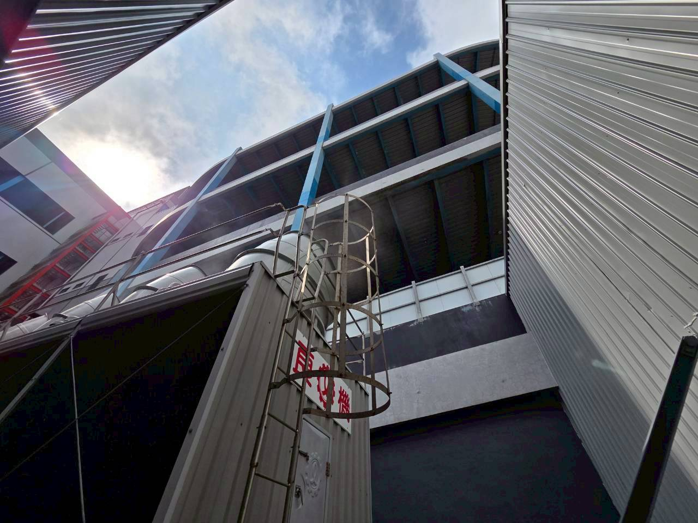

冷卻水塔噪音改善｜工業設備降噪
冷卻水塔很吵，不一定只怪風扇。
風扇、馬達、落水、塔體振動、管路與聲音直射方向，都可能一起影響鄰界噪音。改善時要兼顧風量、散熱、維修與結構振動，而不是看到設備就先圍一圈板。

常見噪音來源
先分辨聲音到底從哪裡來。
如果只看總分貝，很容易把不同問題混在一起。冷卻水塔常見是空氣傳聲與結構振動同時存在。
風扇與馬達
葉片風切、馬達與傳動部件會形成穩定機械聲與寬頻噪音。
落水聲
水流撞擊與塔內落水聲，可能透過開放結構向外傳遞。
塔體與基座振動
設備若透過底座或鋼構把振動帶入建築，遠端可能出現低頻嗡嗡聲。
管路與固定點
管路支撐、剛性固定與流體脈動，也可能變成另一條結構傳振路徑。
現場工程判斷

冷卻水塔、隔音牆與結構要一起評估。

風扇與出風方向
確認主要聲音方向、風扇轉速及受影響位置，再決定是否需要隔音牆或其他措施。
隔音牆不是越高越好
需要依聲源高度、受音點、距離與繞射路徑規劃，並注意不能妨礙設備散熱與維修。
現場條件決定做法
同樣是冷卻水塔，屋頂、地面、商場或工廠的施工限制與傳聲路徑可能完全不同。
改善流程
先找對聲源，再決定隔音、消音或減震。
比起先買材料，先把真正的噪音路徑分清楚通常更省錢。
01
聲音直射
確認風扇、塔體與住戶或鄰界的相對位置。
02
風量與散熱
任何隔音措施都不能犧牲設備正常運轉。
03
基座振動
檢查避震器、底座與鋼構是否形成短路傳振。
04
管路支撐
檢查固定點、支撐與柔性連接是否合理。
05
完工驗證
依現場條件比對改善前後，確認主要問題是否真正下降。
相關內容
冷卻水塔問題，常常和低頻、管路、隔音牆一起出現。
FAQ
冷卻水塔噪音常見問題
冷卻水塔噪音主要來自哪裡？
風扇風切、馬達、落水、塔體振動、基座與管路都可能是來源，通常需要一起判斷。
加高隔音牆就一定有效嗎？
不一定。隔音牆主要處理聲音直射，若問題來自結構振動或管路傳振，單做隔音牆可能效果有限。
為什麼晚上特別容易被聽見？
夜間背景噪音下降後，同樣的設備聲會更突出，尤其是低頻與規律性聲音。
減震只換橡膠墊可以嗎？
要看設備重量、轉速、底座與管路連接方式。若剛性接點仍存在，可能仍會傳振。
改善前需要量測嗎？
建議先確認聲源與受影響位置，必要時搭配噪音或振動量測，再決定工程做法。
冷卻水塔晚上被陳情？先確認真正噪音源。
桃園及全台服務｜可先用 LINE 提供設備、周邊與受影響位置照片。